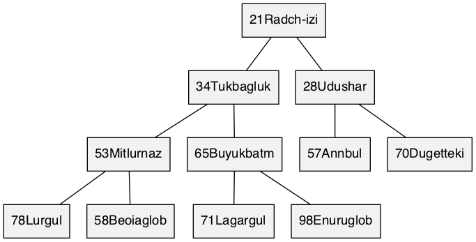

<H>heap
struct <H>heap { struct <PH>node_array as_array; };
Stores the heap as an implicit binary tree in an array called a. To initialize it to an idle state, see <H>heap, {0} (C99), or being static.

Header src/heap.h depends on src/array.h; examples test/test_heap.c; on a compatible workstation, make creates the test suite of the examples.

A <H>heap is a binary heap, proposed by Williams, 1964, Heapsort, p. 347 using terminology of Knuth, 1973, Sorting. It can be used as an implementation of a priority queue. Internally, it is an array with implicit heap properties on <PH>priority and an optional <PH>value that is associated with the value.
<H> that satisfies C naming conventions when mangled and an assignable type <PH>priority associated therewith. HEAP_NAME is required; HEAP_TYPE defaults to unsigned int. <PH> is private, whose names are prefixed in a manner to avoid collisions.HEAP_TYPE is changed to an incomparable type. For example, a maximum heap, (a, b) -> a < b.HEAP_VALUE, is stored in <H>heapnode, which is <PH>value.<STR> contained in src/to_string.h. Require <name>[<trait>]to_string be declared as <PSTR>to_string_fn.heap.h multiple times with HEAP_EXPECT_TRAIT and then subsequently including the name in HEAP_TRAIT.typedef HEAP_TYPE <PH>priority;
Valid assignable type used for priority in <PH>node. Defaults to unsigned int if not set by HEAP_TYPE.
typedef int(*<PH>compare_fn)(<PH>priority_c a, <PH>priority_c b);
Returns a positive result if a is out-of-order with respect to b, inducing a strict weak order. This is compatible, but less strict then the comparators from bsearch and qsort; it only needs to divide entries into two instead of three categories.
typedef struct <H>heapnode <PH>node;
If HEAP_VALUE is set, (priority, value) set by <H>heapnode, otherwise it's a (priority) set directly by <PH>priority.
typedef void(*<PSTR>to_string_fn)(const <PSTR>element *, char(*)[12]);
src/to_string.h: responsible for turning the read-only argument into a 12-char null-terminated output string, passed as a pointer in the last argument. This function can have 2 or 3 arguments, where <PSTR>element might be a map with a key-value pair.
struct <H>heapnode { <PH>priority priority; <PH>value value; };
If HEAP_VALUE is set, this becomes <PH>node.
struct <H>heap { struct <PH>node_array as_array; };
Stores the heap as an implicit binary tree in an array called a. To initialize it to an idle state, see <H>heap, {0} (C99), or being static.
| Modifiers | Function Name | Argument List |
|---|---|---|
| static struct <H>heap | <H>heap | |
| static void | <H>heap_ | heap |
| static void | <H>heap_clear | heap |
| static size_t | <H>heap_size | heap |
| static int | <H>heap_add | heap, node |
| static <PH>node * | <H>heap_peek | heap |
| static <PH>value | <H>heap_pop | heap |
| static <PH>node * | <H>heap_buffer | heap, n |
| static void | <H>heap_append | heap, n |
| static int | <H>heap_affix | heap, master |
| static const char * | <STR>to_string | box |
static struct <H>heap <H>heap(void)
Zeroed data (not all-bits-zero) is initialised.
static void <H>heap_(struct <H>heap *const heap)
Returns heap to the idle state where it takes no dynamic memory.
static void <H>heap_clear(struct <H>heap *const heap)
Sets heap to be empty. That is, the size of heap will be zero, but if it was previously in an active non-idle state, it continues to be.
static size_t <H>heap_size(const struct <H>heap *const heap)
heap is not null, returns it's size.static int <H>heap_add(struct <H>heap *const heap, <PH>node node)
Copies node into heap.
heap.size)static <PH>node *<H>heap_peek(const struct <H>heap *const heap)
heap or null when the heap is empty.static <PH>value <H>heap_pop(struct <H>heap *const heap)
Only defined when <H>heap_size returns true. Removes the lowest element.
heap.size)static <PH>node *<H>heap_buffer(struct <H>heap *const heap, const size_t n)
The capacity of heap will be increased to at least n elements beyond the size. Invalidates pointers in heap. All the elements heap.as_array.size <= index < heap.as_array.capacity can be used to construct new elements without immediately making them part of the heap, then <H>heap_append.
a is idle and buffer is zero, a null pointer is returned, otherwise null indicates an error.static void <H>heap_append(struct <H>heap *const heap, const size_t n)
Adds and heapifies n elements to heap. Uses Floyd, 1964, Treesort to sift-down all the internal nodes of heap. The heap elements must exist, see <H>heap_buffer.
heap.size + n) Doberkat, 1984, Floydstatic int <H>heap_affix(struct <H>heap *restrict const heap, const struct <H>heap *restrict const master)
Shallow-copies and heapifies master into heap.
heap.size + copy.size)static const char *<STR>to_string(const <PSTR>box *const box)
src/to_string.h: print the contents of box in a static string buffer of 256 bytes, with limitations of only printing 4 things at a time.
2020 Neil Edelman, distributed under the terms of the MIT License.